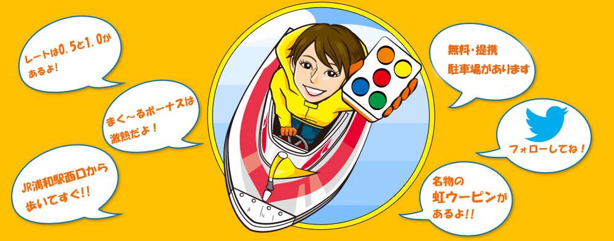
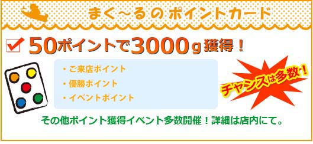
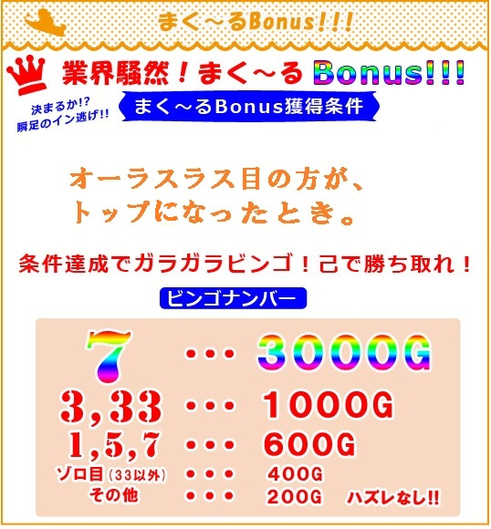
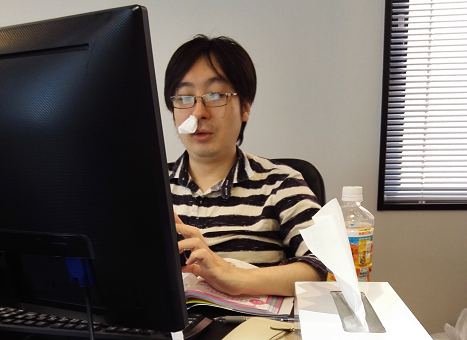
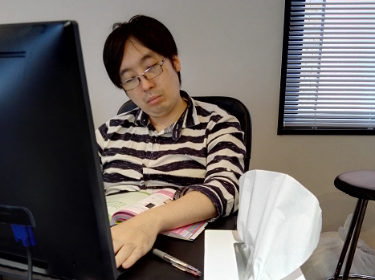

新着情報
ここにTwitter埋め込み


ルール＆マナー
-
東南戦です
0.5と1.0の2レートです
聴牌連荘、形式テンパイがあります
100点単位は四捨五入です
25000点持ち、30000点返しです
55000点でゲーム終了となります
一本場は300点です
一発赤虹裏に(0.5)100Ｇ(1.0)200Ｇ、虹とトビに(0.5)200Ｇ、(1.0)400Ｇのご祝儀が付きます
赤が3枚と虹5ピンが一枚入っています
鳴いてもご祝儀がつきます
役満の御祝儀は出和了1000G、ツモ和了500Gオールとなります
ゲーム代金は(0.5)400Ｇ(1.0)600Ｇです
人和はハネ満(倍満以上の手役がある場合はそちらを優先)です
ポン、チーは発声優先(ほぼ同時の場合はポン優先)です
ダブロンあり、三家和は流局です
流し満貫 あり（満貫払いで、流局後の成立となります）です
箱下清算は無しで、ドボン了はございます。0点は続行です
見せ牌、コシ、の規定は特にありません
空ポン、空チー、チョット待って、などは1000点罰符の対象になります
誤ロン、誤ツモ、多牌、少牌、さらし間違えは和了放棄です
誤ロン、誤ツモは倒牌時チョンボで3000点オール、ノーゲームでその局をやり直しとさせていただきます
パオは、ツモ和了した場合は責任払い、ロン和了した場合は折半払いです
大明槓のリンシャンツモはツモあがり扱いです(ツモ符は付きません)
国士無双の暗カン和了あります
九種九牌、四風子連打、三家和は親が流れて1本場増しになります(4人リーチはゲーム続行です)
オーラスの親は和了止め、聴牌止めが可能です
同点の場合は、起家近い方が上位です
起家は回り親です
難しい裁定はスタッフの判断に従ってください -
先ツモは禁止です
上家の方が打牌を完了してから手を伸ばすようにお願いします
点棒・チップは相手のお手元までお願いします
卓の中央部に落ちるとトラブルの原因になります
相手の和了、待ちへの批判、三味線行為、威圧的な
言動等は禁止です
自山の前出し、リンシャン牌降ろしにご協力下さい
リーチ、ツモ、ロン、ポン、チー、等の発言は正確にお願いします
発言がない場合はアガリ放棄となるケースがあります
ラス半コールにご協力下さい
お客様のアウトは一切お断りしています
お煙草が苦手な方もいらっしゃいますので
「置きタバコ」はご遠慮下さい
メンバー紹介

店長
競技麻雀のプロ雀士。東京都墨田区出身、血液型B型、日本プロ麻雀連盟所属（現在、同団体内での段位は七段）。

主任
競技麻雀のプロ雀士。東京都墨田区出身、血液型B型、日本プロ麻雀連盟所属（現在、同団体内での段位は七段）。
アクセス
-
埼玉県さいたま市浦和区仲町1-2-9 3F
TEL 048-831-2500
営業時間 PM12:00～ラスト
-